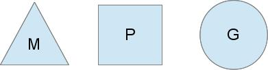

引言
Go 1.1 的一大功能是由 Dmitry Vyukov 贡献的新的调度器。新的调度器极大地提高了并行 Go 程序的性能，没什么比为此写一篇文章更好的了。
最初的设计文档已经涵盖了此博文的大部分内容。这是一个相当全面的文档，但是技术性很强。
你需要了解的有关新的调度器程序的所有信息都在设计文档中，但是本文配有图片更加方便理解。
Go 运行时对调度程序有什么要求？
在研究新的调度器之前，我们需要了解为什么需要它。当操作系统可以为你调度线程时，为什么还要创建用户空间的调度程序？
POSIX 线程 API 在很大程度上是对现有 Unix 进程模型的逻辑扩展，因此，线程获得了许多与进程相同的控件。线程具有自己的信号掩码，更贴近于 CPU 资源的分配，可以放入 cgroups 中，并可以查询它们使用了哪些资源。所有这些控件增加了 Go 程序使用 goroutine 之外不需要的功能开销，并且当你程序中有 100,000 个线程时，资源占用会迅速增加。
另一个问题是操作系统无法基于 Go 模型做出明智的调度决策。例如， Go 的垃圾回收器要求在运行时停止所有线程，并且内存必须处于一致状态。这涉及等待运行的线程到达我们知道的一致状态。
当你在随机点安排了许多线程时，可能免不了等待许多线程到达一致状态。 Go 调度程序可以决定仅在已知的内存一致的点上调度。这意味着，当我们停止垃圾回收时，只需要等到正在 CPU 内核上主动运行的线程即可。
我们的角色
通常有 3 种线程模型。一个是 N:1 ，在操作系统线程上运行多个用户空间线程。这样的优势是可以非常快速地进行上下文切换，但是不能利用多核系统的优势。另一个是 1:1 ，一个执行线程与一个操作系统线程匹配。它利用了计算机上所有的内核，但是上下文切换很慢，因为它必须通过操作系统捕获。
Go 尝试通过使用 M:N 调度程序融合以上两者的优势。它将任意数量的 goroutine 调度到任意数量的操作系统线程上。你可以快速进行上下文切换，并利用系统中的所有核心。这种方法的主要缺点是它增加了调度程序的复杂性。
为了完成调度任务，Go 调度器使用了 3 种主要实体：

三角形代表操作系统线程。它是由操作系统管理的执行线程，其工作原理与你的标准 POSIX 线程非常相似。在运行时代码中，它被称为 M 表示机器。
圆形代表一个 goroutine 。它包括栈，指令指针和其他对调度 goroutine 至关重要的信息，例如可能会阻塞它的任何通道。在运行时代码中，它被称为 G 。
矩形代表调度的上下文。你可以将其视为调度程序的本地化版本，该调度程序在单个线程上运行 Go 代码。这是让我们从 N:1 调度程序转到 M:N 调度程序的重要部分。在运行时代码中，它被称为 P 表示处理器。这部分内容多一点。

在这里，我们看到 2 个线程（M），每个线程都有一个上下文（P），每个线程都运行一个 goroutine（G）。为了运行 goroutine ，线程必须拥有一个上下文。
上下文数量在启动时由 GOMAXPROCS 环境变量的值设置。或者通过运行时函数 GOMAXPROCS() 设置。通常，在程序执行期间这个值不会改变。实际上，上下文数量是固定的，这意味着在任何时候只有 GOMAXPROCS 个线程在运行 Go 代码。我们可以使用它来调整 Go 进程对计算机的调用，例如在 4 核 PC 上用 4 个线程运行 Go 代码。
变成灰色的 goroutine 尚未运行，但已准备好进行调度。它们被排列在称为运行队列（runqueues）的列表中。每当 goroutine 执行 Go 语句时，就会将 goroutine 添加到运行队列的末尾。一旦上下文要在调度点运行 goroutine ，它便将 goroutine 从其运行队列中弹出，设置栈和指令指针，然后开始运行这个 goroutine 。
为了减少互斥锁争用，每个上下文都有自己的本地队列。 Go 调度器的早期版本仅具有全局运行队列并带有互斥量来保护它。线程为了等待互斥锁经常被阻塞。如果有一台 32 核心的计算机想要充分利用其性能，这就变得很糟糕。
只要所有上下文都有运行的 goroutine ，调度器就会稳定保持这个状态继续调度。但是，有两种情形可以改变这种状态。
你要做什么（系统）调用？
你现在可能想知道，为什么要有上下文？我们为什么不摆脱上下文将运行队列直接放到线程上？不是这么理解的。之所以要有上下文，是因为如果正在运行的线程处于某种原因需要阻塞，我们还可以将它们移交给其他线程。
举个例子，当我们需要执行系统调用时，就需要阻塞。由于线程既不能执行代码，也不能在系统调用中被阻塞，所以我们要移交上下文，以便它可以保持调度。

在这里，我们看到一个线程放弃其上下文，以便另一个线程可以运行它。调度程序确保有足够的线程来运行所有上下文。上图中的 M1 可能仅为了处理此系统调用而创建，也可能来自线程缓存。正在执行系统调用的线程将保留系统调用的 goroutine ，因为它仍然在执行，尽管在操作系统中被阻塞了。
当系统调用返回时，线程必须尝试获取上下文才能运行返回的 goroutine 。正常的操作模式是从其他线程窃取上下文。如果偷不到，它将把 goroutine 放在全局运行队列中，将自身放在线程缓存中并进入睡眠状态。
全局运行队列是上下文从本地运行队列用尽时再去提取的运行队列。上下文也会定期检查全局运行队列中的 goroutine 。否则，全局运行队列上的 goroutine 可能永远无法运行。
这种处理系统调用的方式下，即使 GOMAXPROCS 设置为 1 ， Go 程序也可以运行多个线程。运行时使用唤起系统调用的 goroutine 将线程留在后面。
工作窃取
改变系统稳定状态的另一种情况是，上下文用尽了要调度的 goroutine 。如果上下文的运行队列上的工作量不平衡，则会发生这种情况。当系统中仍有工作要做时，这可能导致上下文最终耗尽其运行队列。为了继续运行 Go 代码，上下文可以将 goroutine 从全局运行队列中取出，但是如果其中没有 goroutine ，则必须从其他地方获取它们。

这里其他地方就是其他上下文。当上下文耗尽时，它将尝试从另一个上下文中窃取大约一半的运行队列。这样可以确保每个上下文都始终在工作，从而确保所有线程都在最大承载量下工作。
展望
调度器还有许多的细节，比如 cgo 线程、 LockOSThread() 函数以及与网络轮询器集成。这些超出本文的范围，但仍然值得研究。我可能以后会写。 Go 运行时库中肯定有很多有趣的构造。